| 日付 | 2008年7月19日（土） - 2008年7月21日（月） | ||||||
|---|---|---|---|---|---|---|---|
| 山域 | 東北の山 | ||||||
| メンバー | グループ（男3女3） | ||||||
| 山行形態 | 前夜発2泊3日小屋・ホテル泊 | ||||||
| アクセス | バス、電車、タクシー | ||||||
| ルート (Map1) |
|
海の日連休から、ようやく夏山シーズンが始まる。
梅雨も明けず、まだまだ天候は不安定だが、
友人に誘われ東北一の名峰と謳われる鳥海山に行く。
1日目
夜行バスに乗って東北の地に向かう。
夜が明けて、車窓には日本海が広がっている。
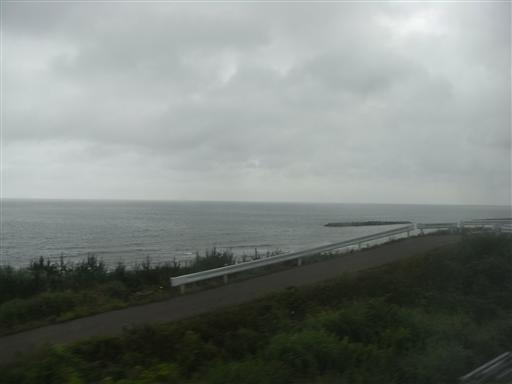
6:10 羽後本荘駅到着。
秋田県に来るのはこれが始めて。
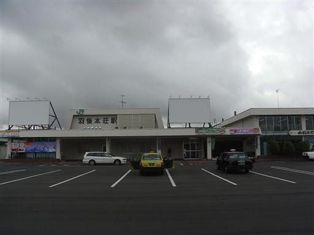
由利高原鉄道のおばこ号に乗って鳥海山麓まで行く。
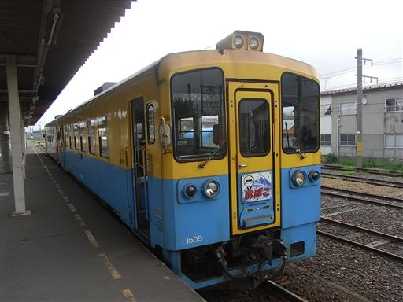
車窓からは、どこまでも田園風景が続いている。
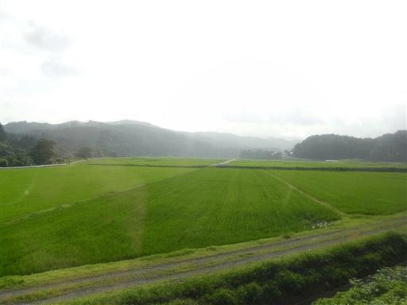
終点の矢島駅に到着。他に登山者の姿は全くない。
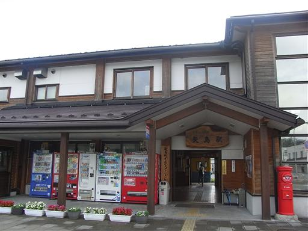
鳥海山は見えないが、青空が広がっている。
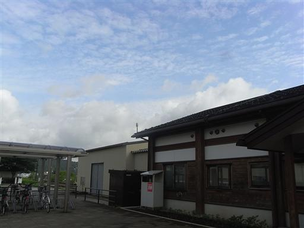
8:25 タクシーに乗って祓川駐車場到着。標高1270m。
駐車場の向こうに、鳥海山が横たわっている。
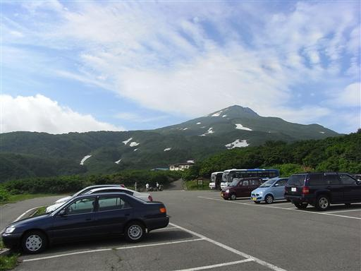
祓川駐車場はすでに鳥海山の中腹。
大きな裾野を持つ山なので、車でアプローチしないと登るのは大変。
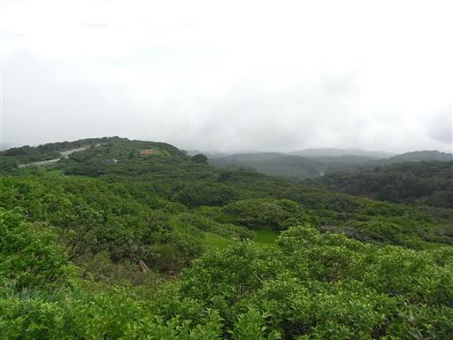
8:45 登山開始。アヤメ咲く竜ヶ原湿原が広がる。
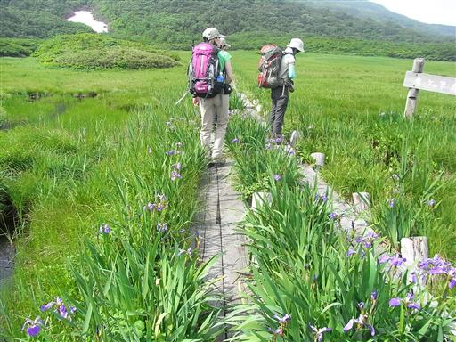
鳥海山に向かって静かな登山道を歩いていく。
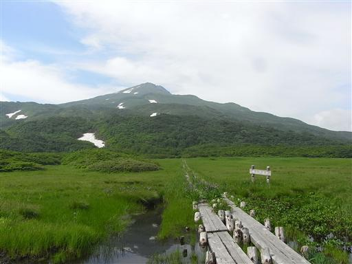
燧ヶ岳と同じように、樹林帯と湿地帯が交互に現れる。
多雪地帯のためあまり高い木は生えていない。
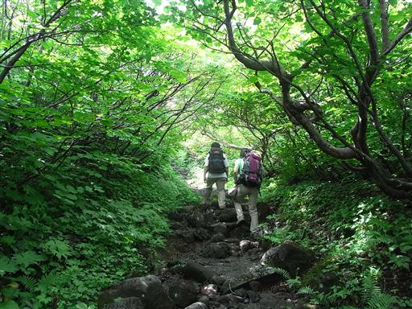
登山道脇に咲くマイヅルソウ。ハート形の葉をつける。
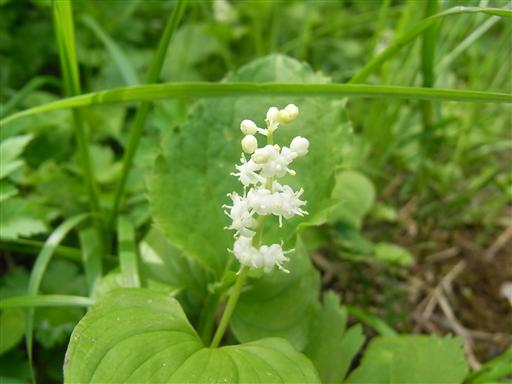
振り返ると広大な竜ヶ原湿原が眼下に見える。
平らな土地は水がたまるからか、木は全く生えていない。
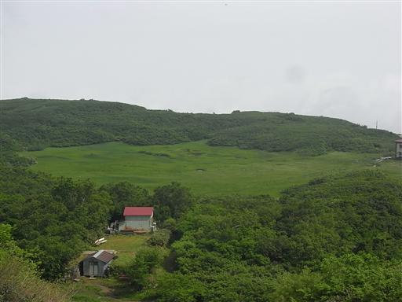
豊富に残る残雪の近くには、尾瀬で見られなかった水芭蕉がたくさん咲いている。
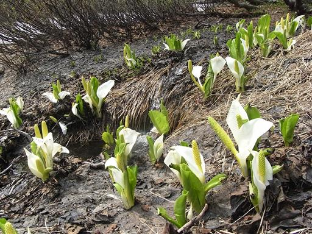
湿原には白くて小さいヒナザクラが群生している。
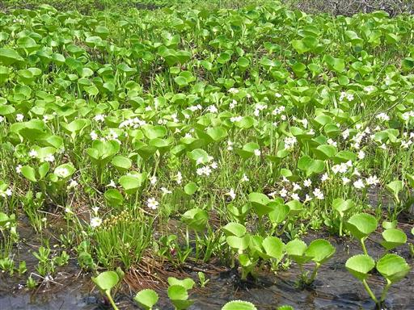
巨大な雪渓。まだ7月なので雪は豊富に残っている。
登山道は雪の下に隠れているので、雪渓を登っていく。
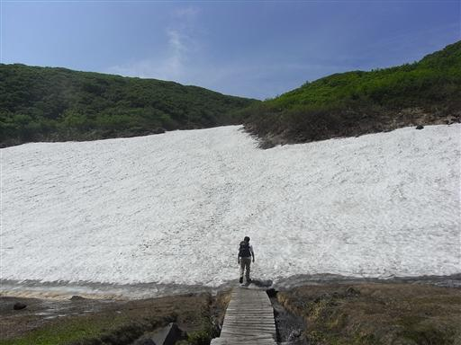
傾斜はそこそこ急。気をつけて歩かないと滑り落ちてしまう。
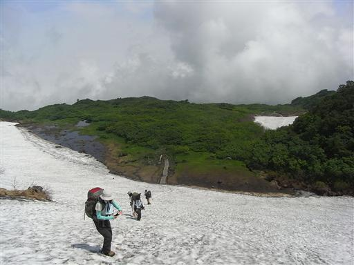
康ケルンに到着。本日の行程のおよそ半分。
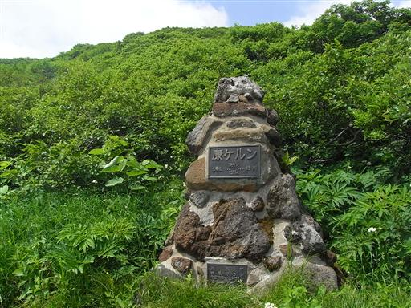
登山道はここから沢沿いの雪渓コースと、花咲く康新道コースに分かれる。
今回は康新道コースを行くことにする。
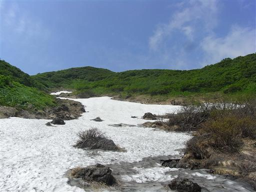
鳥海山中腹にある七ツ釜避難小屋。
さほどきれいな小屋ではないが、利用価値は高そう。
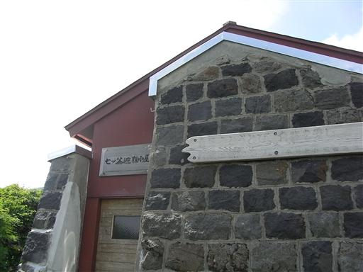
森林限界を越えて、辺り一面お花畑が広がる。
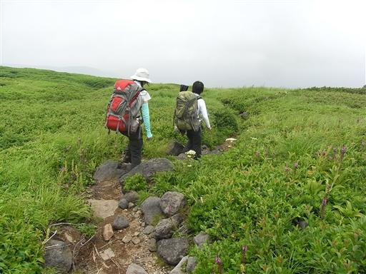
白黄紫、いろいろな花が咲いていて非常にカラフル。
紫色の花はヨツバシオガマ。
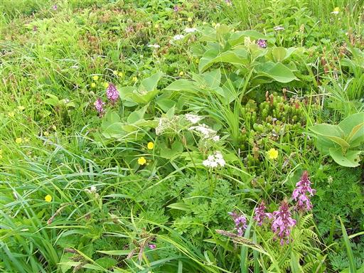
ハクサンシャジン。紫の鐘形の花をたくさん付けている。
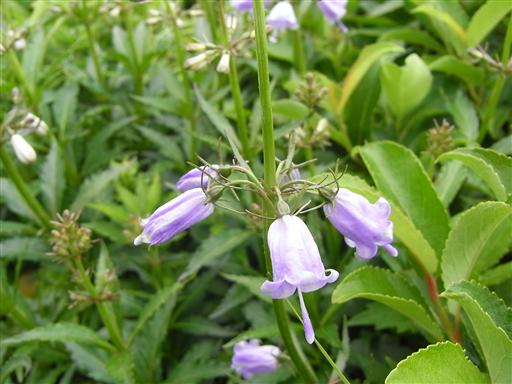
イワギキョウ。小さな茎や葉に比べてやたら大きな花を咲かせている。
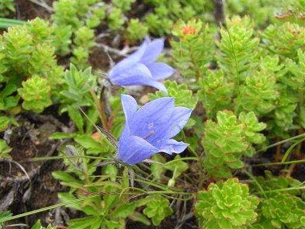
イワブクロ。花に毛がたくさん生えている。
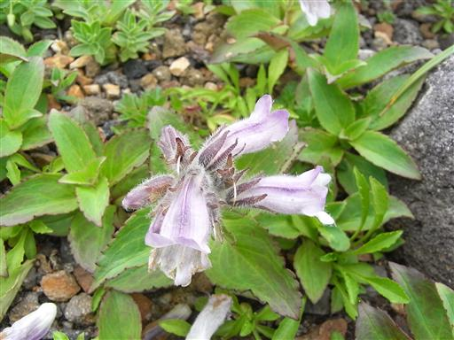
起伏のない斜面にはハイマツ帯がどこまでも続いている。
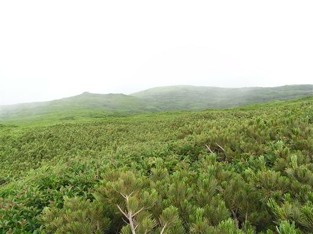
すぐ横には大きな崖が切れ落ちている。
この崖の淵に登山道が続いている。
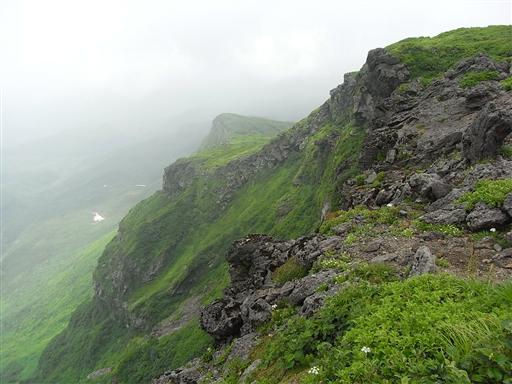
ハイマツ帯の上空には無数のトンボが飛び回っている。
巨大なオニヤンマが飛んできた。とにかくでかい。
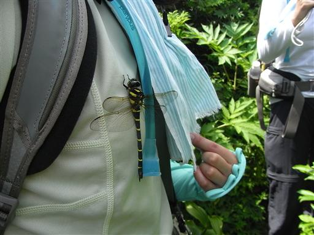
途中から雲が出てきて、鳥海山の山頂はほとんど見えなくなってしまった。
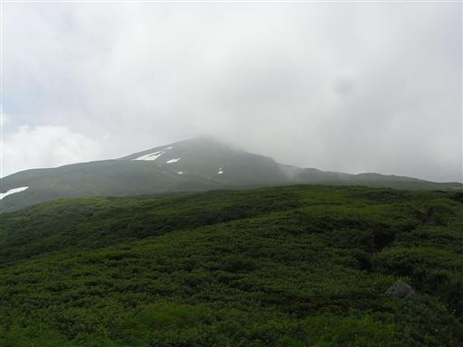
イワウメ。花はまだ咲いていない。
岩の上にびっしりと葉がついていて、触ると弾力がある。
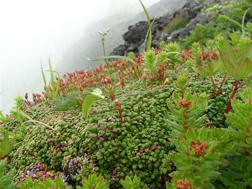
チョウカイフスマ。鳥海山と月山にしか咲かない固有種。
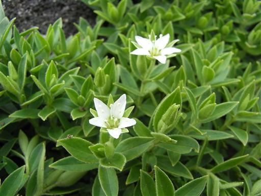
他の山域では見られない花だが、鳥海山では岩に寄り添うようにして、あちこちに群生している。
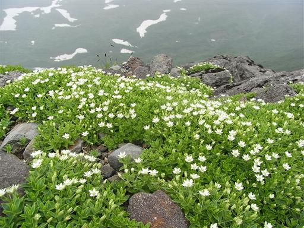
山頂部が見えてきた。少し青空も見えてくる。
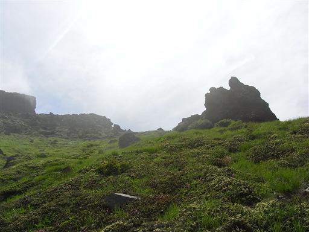
アオノツガザクラ。岩にへばり付くようにして丸い花を咲かせている。
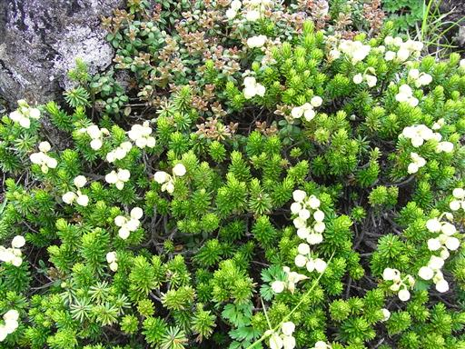
山頂直下で他の登山道と合流する。
ちらほらと人は見えるが、登山者の数は少ない。
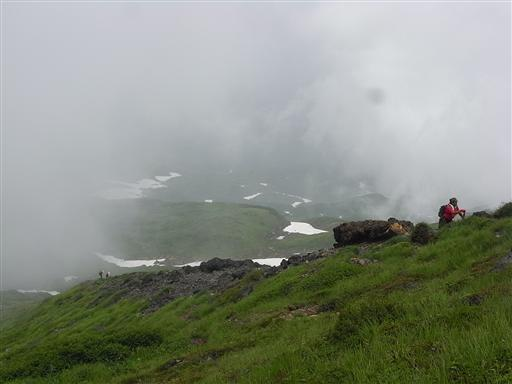
チョウカイアザミのつぼみ。鳥海山にしか咲かない非常に貴重な固有種。
独特の色をしている。
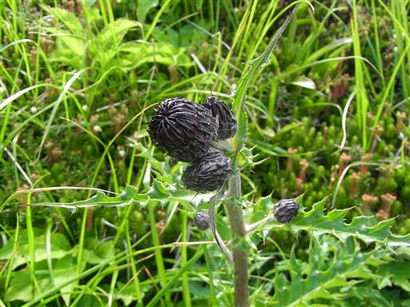
13:25 七高山山頂到着。標高2230m。
鳥海山の外輪山で、三角点があるのはここ。
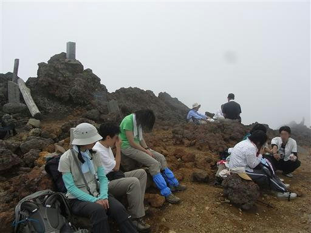
外輪山の崖から下を覗き込む。
その先にあるドーム形の新山は雲で全く見えない。
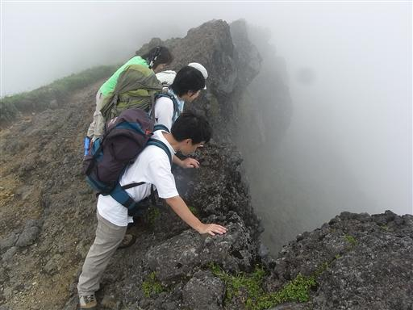
20分ほど山頂にいたが晴れそうにないので、小屋に向かうことにする。
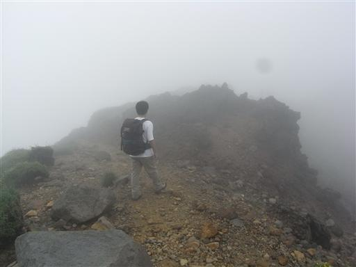
外輪山から内側の崖を下りていく。
岩がごろごろしている急傾斜の道で歩きにくい。
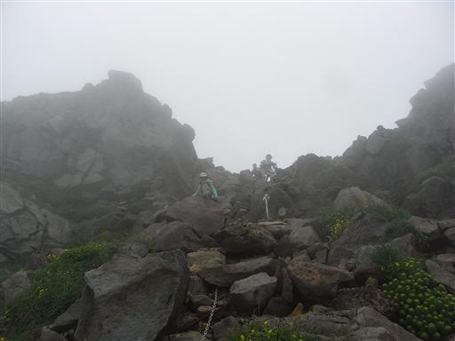
かなり急傾斜の雪面をトラバース。
平らになっている足跡はあるが、さすがに歩くのは怖い。
滑落したらおそらく止められない。
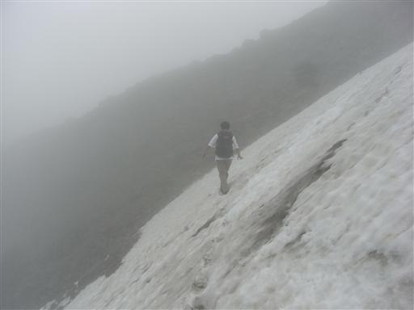
14:09 本日の宿泊地、御室小屋に到着する。
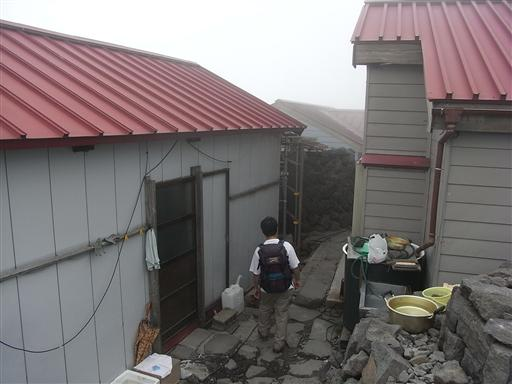
御室小屋の側には立派な大物忌神社が建てられている。
ここは古来より信仰の山として栄えていた。
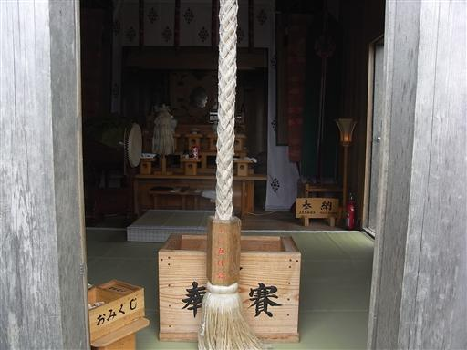
ザックを小屋に置いて、鳥海山の最高峰・新山をめざす。
新山は1801年の噴火によって出来たもので、外輪山の隣に聳えている。
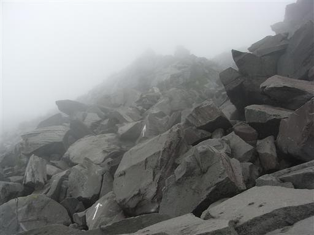
溶岩が固まった岩が剥き出しになった、異様な風景が広がっている。
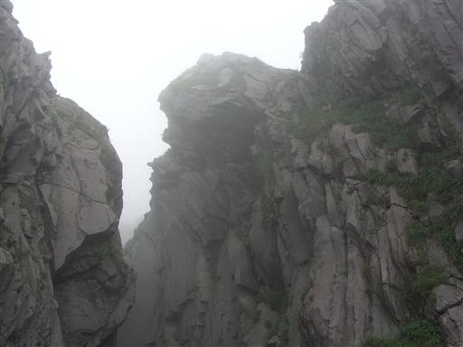
岩の溝の中を通り抜けて山頂をめざす。

15:06 鳥海山山頂到着。標高2236m。
燧ヶ岳に続く東北第2位の高峰。
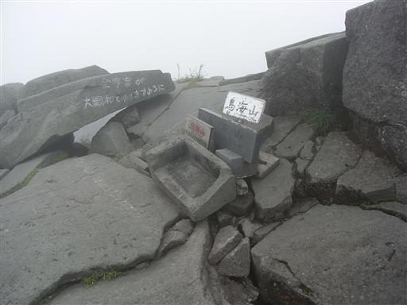
辺りには岩の塔があちこちに林立している。
おそらくその中でここが一番標高が高いのだろう。
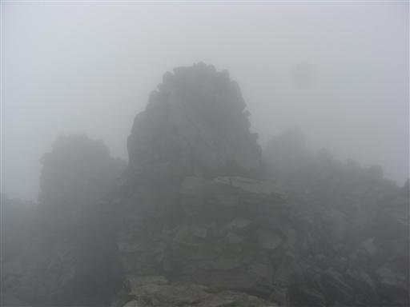
新山の麓には大きな穴があいていて、そこに祠が祀られている。
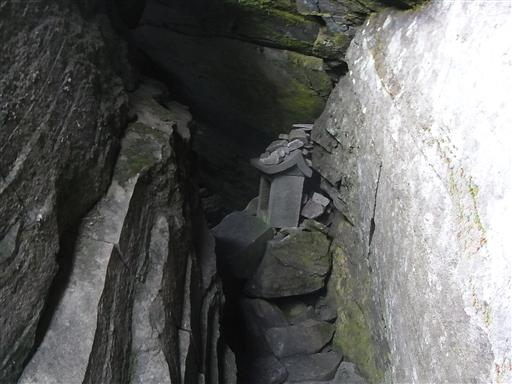
ツガザクラ。
溶岩だらけの不毛な場所にも、小さな花が所々に咲いている。
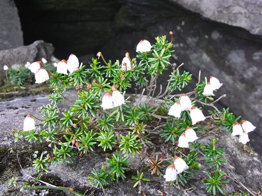
岩の割れ目に沿って咲くチョウカイフスマ。
とにかく岩が好きな花だ。
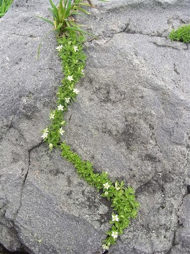
御室小屋に戻ってくる。
小屋の中は中2階や2階があり、天井が非常に低い。
登山道は人が少なかったのに、どこから集まってきたのか小屋内は大勢の人であふれていた。